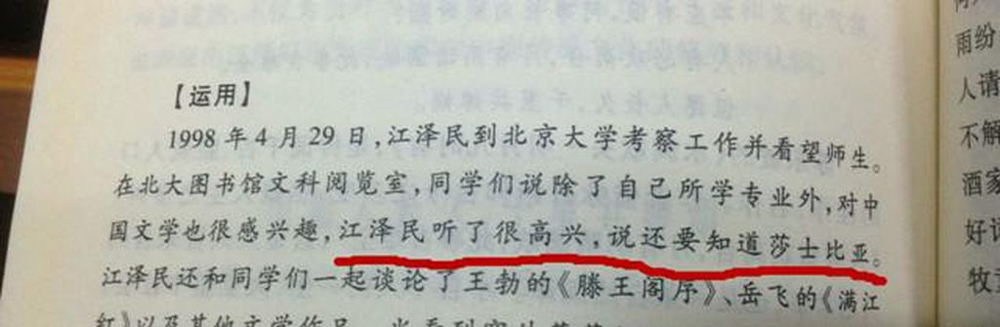

今天一则《教育部部长袁贵仁:绝不能让传播西方价值观念 教材进课堂》的新闻很快引发舆论炸锅。其实袁的讲话是在学习 贯彻《关于进一步加强和改进新形势下高校宣传思想工作的意见》 精神座谈会上所提，这个两办联合下发的《意见》第一条就指出 要深入开展中国特色社会主义和中国梦宣传教育，所以袁的讲话 只是对《意见》的具体落实。
同样是对高校思想领域喊话，袁部长的一席话让我想起了 1998 年 4 月 29 日，北大百年校庆前，长者来到燕园看望师生， 同学们说除了自己所学专业外，对中国文学也很感兴趣，长者听 了很高兴，说「还要知道莎士比亚」。好一个「还要知道莎士比 亚」，大学生现在越来越精致利己，领导人来问话，绝对政治正确的回答就是表达出对传统文化的喜好，□□□□□□□□□□ □□，□□□□□□□□□□、□□□□□□□□□□□□对国学的认同与尊崇，并要青年学生有文化自信。但长者毕竟长者， 反而难能可贵的教导学生要多读莎士比亚。

长者独提莎士比亚绝不偶然，在海南大学视察时，长者曾走到学生中间说：「一个人不管学什么专业，总得懂一些文学知识， 有一点艺术素养，这对于丰富自己的思想和生活，提高自己的审 美能力很有好处。托尔斯泰、莎士比亚的作品总该读一些吧，巴尔扎克、但丁写了些什么总该有所了解吧，达·芬奇的名画《蒙 娜丽莎》也应该知道吧」，甚至只字未提中国传统文学艺术。
1999 年 10 月，长者造访伦敦，在莎士比亚环球剧场观看 了专场演出。在接受时代周刊采访时，长者说到：「我是中华人 民共和国的主席，但我同时是一个普通公民，我有自己的兴趣和 爱好。比如说，我喜欢读唐诗、宋词和元曲，也读过但丁、莎士 比亚、巴尔扎克、托尔斯泰和马克·吐温的一些作品。这些作品 都给了我极大的乐趣。……我相信，艺术的各个领域都是相通的。」
李肇星在其《说不尽的外交》一书中提到有一次，外交部欧 洲司为长者会见外宾准备了一份谈话参考要点。这份「谈参」引 用了莎士比亚十四行诗中的一句话「和平在宣告橄榄枝永久葱 茏」。李回忆道，我审批并签字后，呈送江主席参考。晚上 10 点多，我家电话响了，是江主席亲自打的：「你们上呈的『谈参』 写得很好。我就想问一下，莎士比亚是在哪里说的『和平在宣告 橄榄枝永久葱茏』。这么晚了，你不必帮我查原文。我这里有莎 士比亚全集，你就告诉我是第几首诗就行了，我自己去查。」
库恩在接受《南方人物周刊》采访时提到一个细节，「在文 化大革命中，汪道涵被批斗，长者去探望他，汪当时什么都不能 做，但有很多时间，长者就建议他读莎士比亚，这是很有趣的。」
长者对莎士比亚的喜爱甚至还膜拜到了周边，90 年代末的一天，长者邀请包括李前宽、孙道临在内的 15 位杰出电影艺术 家到中南海做客，讨论中国电影工业问题。长者指着孙道说：「我 喜欢你给莎士比亚的哈姆雷特配的音。我尤其喜欢哈姆雷特的那 段独白『行动还是放，这是个问题。』你配得太好了！」
此外，长者还给著名莎学家郑土生的《莎士比亚戏剧故事全 集》题写了书名，希望这部通俗的集子能有助于青年人了解莎士 比亚戏剧故事。库恩在《他改变了中国》一书中也提到，「他常 说，如果一个中国人对贝多芬的交响乐和莎士比亚的戏剧一无所 知，他就是精神贫儿。」